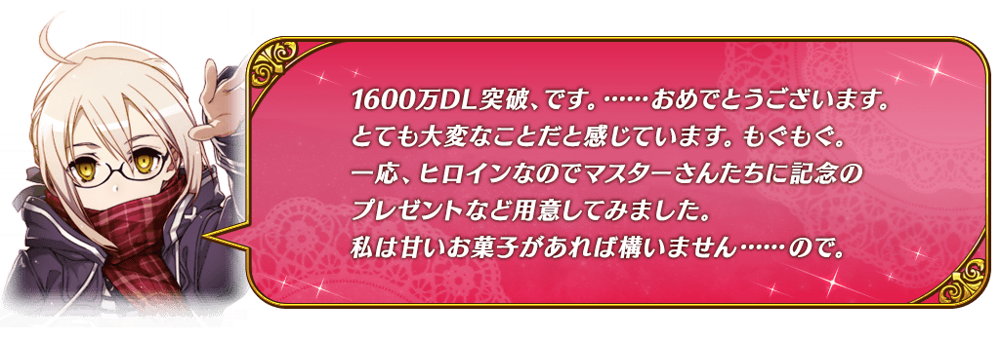
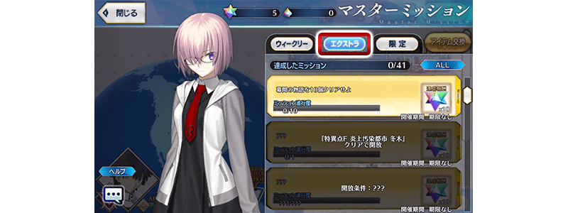
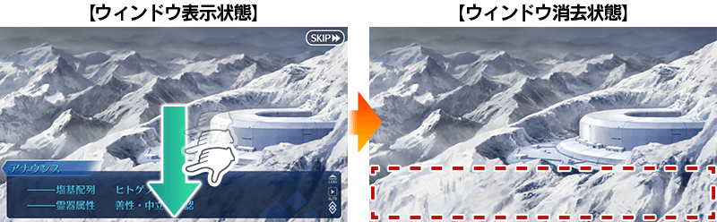
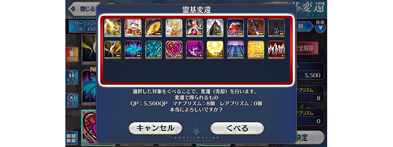
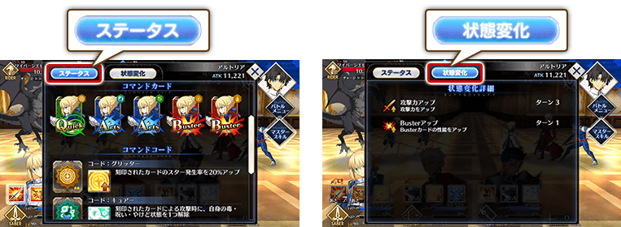
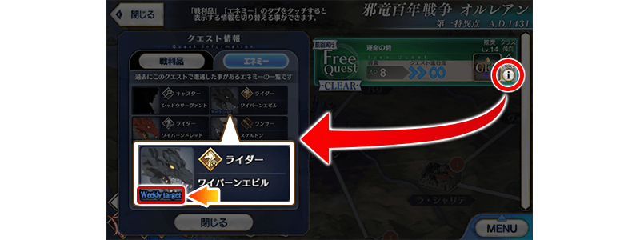

◆舉辦期間◆
2019年4月10日(三) 17:00～4月17日(三) 11:59
※本頁面皆為開發中圖片。會有與實際圖片有所差異的情況。
為了記念舉辦「1600萬DL突破宣傳活動」而實施特別連續登入獎勵。
在下述期間中，7天內連續登入的話，贈送呼符10張(聖晶石召喚10次份)等豪華報酬！
◆舉辦期間◆
2019年4月11日(四) AM3:00～4月18日(四) AM2:59
◆贈送對象◆
2019年4月17日(三) AM2:59前通過「特異點F 炎上汙染都市 冬木」的Master對象
| 連續登入天數 | 贈送內容 |
|---|---|
| 第1天 | 白銀果實 10個 |
| 第2天 | 叡智的猛火ALL★4(SR) 10張 |
| 第3天 | 黃金果實 10個 |
| 第4天 | 1,000萬QP |
| 第5天 | 英靈結晶・星之芙芙ALL★3(HP) 10張 |
| 第6天 | 英靈結晶・太陽之芙芙ALL★3(ATK) 1張 |
| 第7天 | 呼符 10張(聖晶石召喚10次份) |
※登入獎勵會在每天AM3:00配發。 ※連續登入天數中斷的話，無法領取之後的禮物。 ※最多能領取7次，但根據成為贈送對象的時間點，可能無法到此上限。 ※上述時間前，在管理室(ターミナル)畫面的關卡橫幅必須要有「CLEAR」的文字顯示。
在進行Servant及概念禮裝的強化時，大成功(經驗值2倍加成)・極大成功(經驗值3倍加成)發生機率以期間限定變成2倍！
無論如何藉此機會強化中意的Servant和概念禮裝吧！
◆舉辦期間◆
2019年4月10日(三) 17:00～4月17日(三) 11:59
在達文西工房內的「Servant保管欄位增加」「概念禮裝保管欄位增加」，可消耗魔力稜鏡追加的保管欄位上限數，再追加20次(合計100欄位)。
◆翻新實施時間◆
2019年4月10日(三) 17:00～
【保管欄位的擴張數】
| 對象保管欄位 | 剩餘次數 | 最大擴張時 |
|---|---|---|
| Servant保管欄位增加 | 60次→80次(追加20次) | 400→500(追加100欄位) |
| 概念禮裝保管欄位增加 | 60次→80次(追加20次) | 400→500(追加100欄位) |
※請注意在Servant保管欄位的擴張及概念禮裝保管欄位的擴張，1次的擴張需要魔力稜鏡50個。
對所有的Master對象，「指令紋章的持有欄位」追加擴張50欄位。
目前為止的100欄位擴張為持有欄位150欄位。
◆翻新實施時間◆
2019年4月10日(三) 17:00～
【所持欄位的擴張數】
| 對象所持欄位 | 擴張數 |
|---|---|
| 指令紋章所持欄位 | 100→150(追加50欄位) |
在Master任務(Extra任務)追加可靠「幕間物語」通過次數達成的新任務。
通過現在實裝的193個幕間物語其中190個的話，最多可得到190個(聖晶石召喚63次份)的聖晶石！
※已通過所有幕間物語的玩家，也能同様領取通過報酬。
◆翻新實施時間◆
2019年4月10日(三) 17:00～
◆通過報酬的領取方式◆
在Master任務畫面顯示的「Extra(エクストラ)」的項目內，會有顯示通過幕間物語的相關任務，點擊已通過的任務領取達成報酬。

◆追加Extra任務◆
| 任務名稱 | 任務達成報酬 |
|---|---|
| 通過10個幕間物語 | 聖晶石 10個 |
| 通過20個幕間物語 | 聖晶石 10個 |
| 通過30個幕間物語 | 聖晶石 10個 |
| 通過40個幕間物語 | 聖晶石 10個 |
| 通過50個幕間物語 | 聖晶石 10個 |
| 通過60個幕間物語 | 聖晶石 10個 |
| 通過70個幕間物語 | 聖晶石 10個 |
| 通過80個幕間物語 | 聖晶石 10個 |
| 通過90個幕間物語 | 聖晶石 10個 |
| 通過100個幕間物語 | 聖晶石 10個 |
| 通過110個幕間物語 | 聖晶石 10個 |
| 通過120個幕間物語 | 聖晶石 10個 |
| 通過130個幕間物語 | 聖晶石 10個 |
| 通過140個幕間物語 | 聖晶石 10個 |
| 通過150個幕間物語 | 聖晶石 10個 |
| 通過160個幕間物語 | 聖晶石 10個 |
| 通過170個幕間物語 | 聖晶石 10個 |
| 通過180個幕間物語 | 聖晶石 10個 |
| 通過190個幕間物語 | 聖晶石 10個 |
所有Servant的幕間物語AP消耗量以期間限定變成1/4！
藉此機會滿足開放條件，通過中意Servant的物語裝吧！
※請注意強化關卡及曜日關卡為對象外。 ※就算在戰鬥中撤退的情況，AP的消耗仍是1/4。
◆舉辦期間◆
2019年4月10日(三) 17:00～4月17日(三) 11:59
主線關卡第1部中，於關卡開始時的支援選擇畫面在支援選擇好友Master的Servant與好友Master選擇自己Servant為支援情況的的友情點數獲得量變成常駐2倍的50點。
將好友做為支援會選擇Servant和概念禮裝的編成列入考量，入手更多友情點數吧！
◆翻新實施時間◆
2019年4月10日(三) 17:00～
◆對象關卡◆
主線關卡第1部(從特異點F到終局特異點)
※透過跟隨的友情點數獲得為對象外。 ※請注意NPC Servant為友情點數獲得量2倍的對象外。 ※請注意第1部的自由關卡為對象外。 ※強化關卡、幕間物語、曜日關卡為對象外。
以期間限定在達文西工房的「魔力稜鏡交換」追加下述的道具。
◆道具交換期間◆
2019年4月10日(三) 17:00～4月17日(三) 11:59
| 追加道具 | 能交換次數 | 1次交換所需的 魔力稜鏡數 |
|---|---|---|
| 【期間限定】Quick・Code・Opener | 3次 | 100個 |
| 【期間限定】Arts・Code・Opener | 3次 | 100個 |
| 【期間限定】Buster・Code・Opener | 3次 | 100個 |
| 【期間限定】呼符 | 5次 | 20個 |
| 【期間限定】叡智的猛火ALL★4(SR)10張組 | 5次 | 40個 |
| 【期間限定】英靈結晶・星之芙芙ALL★3(HP) | 20次 | 15個 |
| 【期間限定】英靈結晶・太陽之芙芙ALL★3(ATK) | 20次 | 15個 |

下述的期間中，在「Master任務」的「限定」標籤內以期間限定追加「【1600萬DL突破記念】任務」。
通過主線關卡第2部 第3章「Lostbelt No.3 － intro －」的話，可得到聖晶石10個！
※已通過主線關卡的玩家也能同樣地領取通過報酬。
另外，預定下回舉辦的新活動的參加條件預定為通過第2部 第3章「Lostbelt No.3 － intro －」。請務必藉此機會推進主線關卡的攻略！
◆舉辦期間◆
2019年4月10日(三) 17:00～5月10日(五) 11:59
◆領取期間◆
2019年4月10日(三) 17:00～5月17日(五) 11:59
◆追加任務◆
| 任務名稱 | 任務達成報酬 |
|---|---|
| 【1600萬DL突破記念】 Lostbelt No.3 － intro － | 聖晶石 10個 |
※請注意舉辦期間與領取期間有所差異。 ※請注意與每週日23:00更新的普通任務(Weekly)不同欄位，超過領取期間的話無法入手報酬。 ※就算通過「【1600萬DL突破記念】Lostbelt No.3 － intro －」，也不會計算在普通任務(Weekly)的任務進行度。 ※根據主線關卡的進行度會有無法達成「【1600萬DL突破記念】任務」的情況。

由於現在舉辦中的「主線關卡通過聲援宣傳活動」主線關卡第1部的AP消耗量現為1/4！並且主線關卡第2部(從Lostbelt No.1到Lostbelt No.3 － intro －)的AP消耗量也變成1/4！尚未通過主線關卡第1部和主線關卡第2部的Master，請務必活用此機會！
◆舉辦期間◆
2019年4月10日(三) 17:00～5月10日(五) 11:59
◆對象關卡◆
主線關卡第1部(從特異點F到終局特異點)
主線關卡第2部(從Lostbelt No.1到Lostbelt No.3 － intro －)
※請注意第1部、第2部的自由關卡為對象外。 ※就算在戰鬥中撤退的情況，AP的消耗仍是1/4。
今後，也預定在期間限定活動和期間限定宣傳活動中，會有將通過主線關卡設為開放條件的情況。
活用本宣傳活動，推進主線關卡的攻略會有所幫助。
訊息視窗消去功能追加
追加可消去文字冒險部份訊息視窗的功能。
在畫面下滑動的話，可消去訊息視窗查看角色的全身和背景全體。
◆追加時間◆
2019年4月10日(三) 17:00～

靈基變還確認的一覧性提升！
靈基變還時，增加在確認欄同時顯示的靈基數。
◆追加時間◆
2019年4月10日(三) 17:00～

在戰鬥中的Servant詳細情報追加指令卡與指令紋章的情報！
在戰鬥中的Servant詳細情報，變得可確認指令卡與指令紋章的情報。
另外在狀態變化標籤變得可確認狀態變化的詳細。
◆追加時間◆
2019年4月10日(三) 17:00～

在指令紋章刻印對象選擇畫面追加刻印狀態的顯示！
在指令紋章刻印時的Servant選擇畫面，變得可確認指令紋章的刻印狀態。
◆追加時間◆
2019年4月10日(三) 17:00～

表示做為敵人任務對象的圖示設計變更！
在關卡情報的敵人一覧視窗中，以圖示顏色區分敵人做為撃破對象任務的分類，變更為以名稱區分。
「Weekly target」= 每週任務
「Special target」= 限定任務
「Event target」= 活動任務
◆追加時間◆
2019年4月10日(三) 17:00～


其他還有，期間限定「1600萬DL記念Pick Up召喚(每日交替)」同時舉辦！
關於詳情，請自下述橫幅確認。